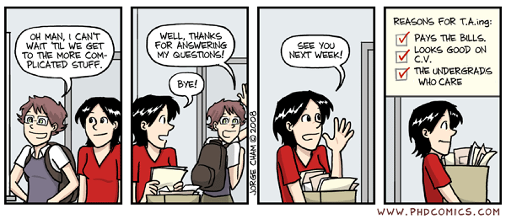

Toggle navigation
Toggle navigation
[Go Back to Prof. Andrea's Homepage]
Graduate Teaching Assistant (UTA) / Graduate Research Assistant (GRA) Hiring

(Adapted from https://phdcomics.com/comics/archive.php?comicid=1085 by Jorge Cham)
Hiring Information for Aspiring GTA/GRA Positions
Program Information
GTA Info Link
"https://cs.gmu.edu/employment-opportunities/graduate-teaching-assistantships/"
GRA Info Link
"https://cs.gmu.edu/employment-opportunities/graduate-research-assistantships/"
Generally Requires:
You must already be accepted to the MS or PhD Program in CS to Apply
GTA - All Applications have to be submitted through Handshake
Individual Professors do not hire for GTA positions directly.
The Associate Department Chairs for Graduate or Undergraduate Programs manages Hiring via Handshake.
Handshake Link
https://gmu.joinhandshake.com
All Applications will be Reviewed and the CS Department will make all Assignments based on Skillsets.
I do not make any hiring decisions or recommendations.
GRA - I do not Hire or Support any Graduate Students for Research Positions
I am a Teaching-Track Professor and do not hire or support any graduate students.
Contact the Tenured/Tenure-Track Faculty Members in your Research Area:
Research Areas Link
https://cs.gmu.edu/research/research-areas/
You can also look at any on-campus job opportunities in general via Handshake:
Handshake Link
https://gmu.joinhandshake.com